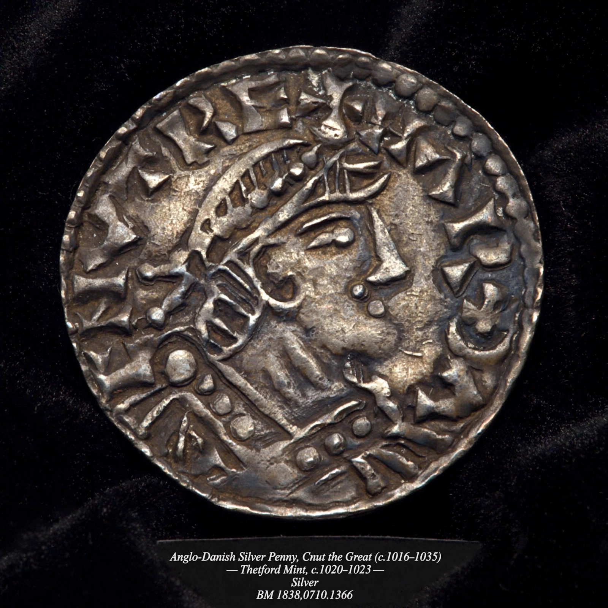

Harthacnut
| Harthacnut | |
 | |
| King of Denmark | c. 1035 – 8 June 1042 |
|---|---|
| King of England | 17 March 1040 – 8 June 1042 |
| Born | c. 1018 |
| Died | 8 June 1042, Lambeth, London |
| Mother | Emma of Normandy |
| Father | Cnut the Great |
Harthacnut (Danish: Hardeknud; "hard knot", c. 1018 – 8 June 1042), also spelled Harthacanute, was King of Denmark from c. 1035 and King of England from 1040 until his death. He was the son of Cnut the Great and Emma of Normandy, and the last Danish king to rule England.
Background
On Cnut's death in 1035, Harthacnut was recognised as king in Denmark but was unable to travel to England because of threats from Norway and Sweden. His half-brother Harold Harefoot acted as regent in England and then took the crown himself. The Encomium Emmae Reginae, written for his mother Emma, was composed in part to support Harthacnut's claim.
Reign in England
After Harold's death in March 1040, Harthacnut landed at Sandwich with a fleet of 62 warships and was accepted as king. His reign was unpopular: he levied a heavy tax to pay off his fleet, had Harold's body exhumed and desecrated, and the killing of two of his tax collectors at Worcester provoked a harsh reprisal on the city.
Death
Harthacnut died suddenly at Lambeth on 8 June 1042, reportedly collapsing while drinking at the wedding feast of the Danish thegn Tovi the Proud — later tradition describes a fit of drunken convulsions. He was succeeded in England by his half-brother Edward the Confessor, son of Æthelred the Unready, ending Danish rule; in Denmark he was succeeded by Magnus the Good of Norway.
See also
Sweyn Forkbeard · Æthelred the Unready · Encomium Emmae Reginae
Recreated from memory as a standalone page.